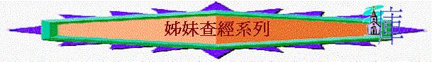

[ Home ] [ 經卷課程 ] [ 查經資料 ] [ 栽培課程 ] [ 事奉培訓 ] [ 聚會資源 ] [ 佈道資源 ] [ 胸懷普世 ] [ 異端異教 ] [ 信息分享 ] [ 專題研究 ] [ 祈禱專題 ] [ 詩歌簡譜 ] [ 動畫之廊 ] [ 輔導關懷 ] [ 站長聯絡 ]
目的:
用小組查經形式, 查考聖經中的婦女,每次查考時間約60MINS
耶穌的母親馬利亞 澆香膏的馬利亞 亞伯拉罕的妻子撒拉 賢德的路得 學習以斯帖 大衛與米甲